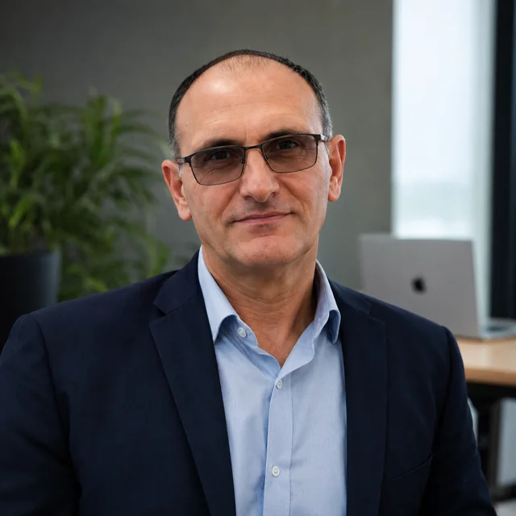
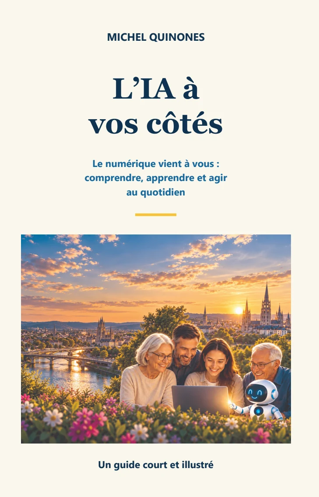
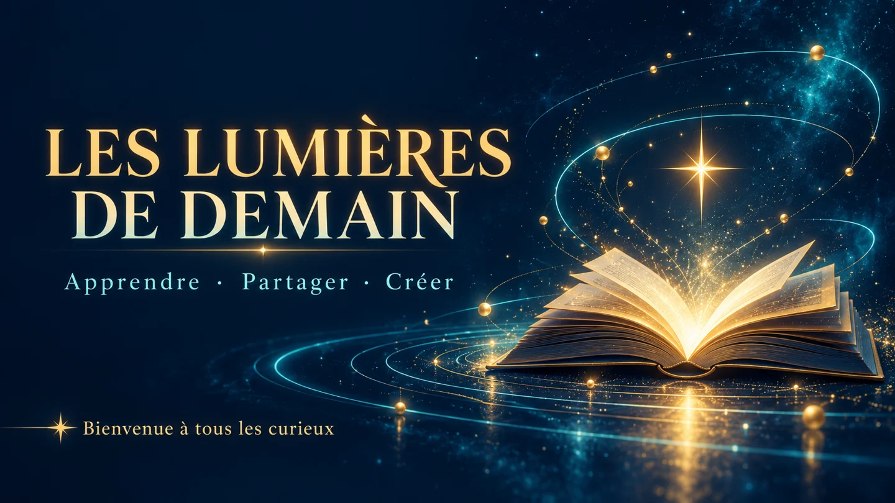
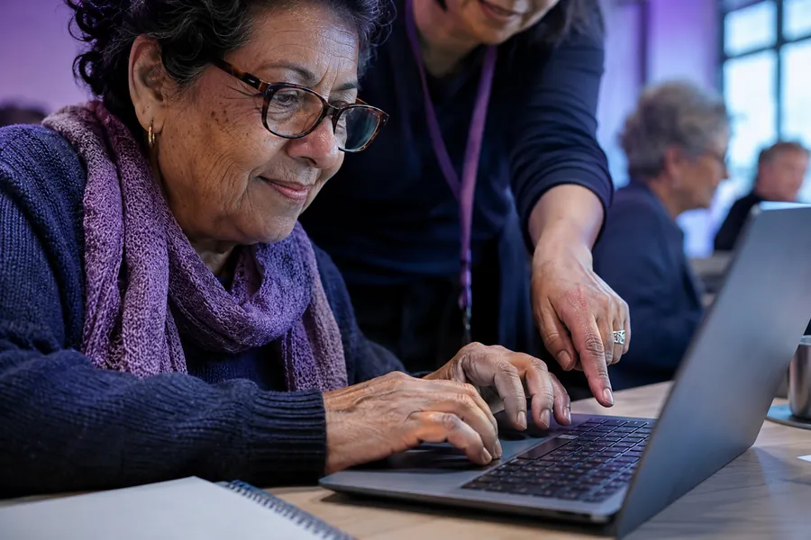

Nouvelles rencontres prochainement
Les prochaines visites, rencontres et participations seront ajoutées ici dès qu'elles seront confirmées.
À venir
Mise à jour au fil des confirmations
Un accompagnement humain et créatif pour transformer une idée en présence numérique élégante, accessible et utile : web, intelligence artificielle, vidéo, communication et transmission.

Accompagnement numérique, IA, création web, contenus visuels et aide personnalisée pour débutants, associations et petites structures.
Sites web, vidéos, réseaux sociaux, IA, conseils sur rendez-vous et autonomie progressive.

Le livre de Michel Quinones · Disponible sur Amazon
Le numérique vient à vous : comprendre, apprendre et agir au quotidien
Et si l’intelligence artificielle devenait un appui pour vos idées et vos projets du quotidien ? J’ai écrit ce guide court et illustré pour aider les débutants et les autodidactes à découvrir l’IA, pas à pas, avec des mots simples.
Dialoguer avec une IA, apprendre, créer et organiser ses idées : dix chapitres pour explorer ses usages, tout en gardant son jugement et en prenant soin de ses données personnelles.
Deux formats distincts : le broché est un livre papier livré à votre adresse ; la version Kindle se lit sur écran. Les prix et les frais de livraison sont indiqués sur Amazon.
L’achat du livre est facultatif. Mon accompagnement bénévole reste gratuit, selon mes disponibilités.

Un espace pour apprendre ensemble
Dans le prolongement du Numérique Vient à Vous, je vous accueille dans un espace Discord pour découvrir le numérique et l’intelligence artificielle avec esprit critique, partager des ressources et faire avancer nos idées.
Nouveau · Le petit défi numérique gratuit
Cinq situations, trois minutes : saurez-vous repérer les pièges ? Découvrez les bons réflexes, puis venez en discuter avec nous.
Essayer le quiz « Repérer les arnaques » →
Rejoindre la communauté sur DiscordParticipation gratuite, aucun achat nécessaire. Les échanges sont communautaires ; je répondrai selon mes disponibilités. Aucun assistant IA Discord n’est actuellement actif.
Agenda
Cette partie est réservée uniquement aux prochaines rencontres annoncées. Les événements terminés sont regroupés sur une page d’archives dédiée pour garder l’accueil plus clair.
Les prochaines visites, rencontres et participations seront ajoutées ici dès qu'elles seront confirmées.
Une nouvelle rubrique dédiée aux interviews, visites de terrain et rencontres spontanées réalisées dans le cadre de « Le Numérique Vient à Vous ».
Commerce local · Rouen · 4 octobre 2026
Lors de ma promenade habituelle du dimanche, je suis passé devant Punjab Cash & Carry. Le magasin était ouvert et j'ai proposé au propriétaire de réaliser immédiatement la vidéo que je lui avais promise. Il a accepté avec simplicité et gentillesse. Voici le résultat de cette rencontre spontanée.
📍 59 rue Lafayette · 76100 Rouen
Épices et condiments, riz et céréales, farines et légumineuses, produits frais et surgelés, boissons, spécialités et produits exotiques venus notamment d'Inde, du Pakistan et du Bangladesh.
✈️ Projet spécial · Recherche de partenaire
À la suite de la vidéo consacrée à Punjab Cash & Carry à Rouen, le propriétaire du magasin m'a personnellement remercié et m'a proposé de l'accompagner pendant environ quinze jours pour découvrir sa famille, son environnement et sa culture dans son pays d'origine. La destination exacte et les dates restent à confirmer.
L'objectif serait de produire une mini-série de contenus humains et culturels : rencontres, vie quotidienne, commerce, gastronomie, traditions, témoignages et regard de terrain. Tout partenariat commercial ou en nature sera clairement signalé dans les publications concernées.
Découvrez le projet, des cours pour débutants et mes actions de terrain. Les interviews et rencontres avec des professionnels disposent désormais de leur propre rubrique.
Vidéo de présentation
Un accompagnement bénévole et gratuit pour les seniors et les débutants : ordinateur, smartphone, courriels, documents et sécurité numérique. En français et en espagnol, au Petit-Quevilly et dans le secteur de Rouen, selon mes disponibilités.
Vidéo sous-titrée · Voix de synthèse.
Découvrir ma chaîne YouTube · Échanger sur LinkedIn
Reportage de terrain · Forum du handicap de Rouen
Une rencontre réalisée au Forum du handicap de Rouen : présentation de la technologie Hypershell, échange avec un représentant et essai de l’exosquelette en conditions réelles.
Forum du Handicap de Rouen · 19 septembre 2026
Cette présentation s’appuie sur la matrice de travail conservée dans mon dossier de suivi. Elle reprend les exposants du Forum, leurs numéros de stand et, lorsque l’information a été vérifiée, une explication simple de leur activité.
Lieu de vie destiné notamment à des personnes vivant avec un handicap psychique stabilisé, avec un accompagnement social favorisant l’autonomie et la vie quotidienne.
✓ Activité vérifiéeSpécialiste des cycles et solutions de mobilité adaptées : tricycles, équipements et dispositifs permettant de faciliter les déplacements selon les capacités et les besoins de la personne.
Site officiel ↗Centre Ressources normand pour les parents ou futurs parents en situation de handicap. Il informe, oriente, sensibilise et accompagne, notamment autour de la parentalité et du matériel de puériculture adapté.
Site officiel ↗Association et services d’accompagnement pour les personnes avec trisomie 21 et d’autres handicaps : soutien des familles, SESSAD, SAVS/SAVA, insertion, répit et équipes mobiles selon les besoins.
Site officiel ↗Matériel médical et solutions favorisant l’autonomie et la mobilité. L’équipe accompagne les personnes dans le choix et l’essai d’équipements adaptés à leurs besoins.
Site officiel ↗Développe des activités de sport, d’arts et de culture accessibles au plus grand nombre, avec une démarche inclusive.
Site officiel ↗Informe et accompagne les familles, les aidants et les tuteurs familiaux. Elle peut notamment renseigner sur la tutelle, la curatelle, l’habilitation familiale et les ressources disponibles pour les aidants.
Site officiel ↗Propose des solutions de déplacement pour les personnes déficientes visuelles : chiens guides, cannes électroniques, aides tactiles et accompagnement à la locomotion.
Site officiel ↗Lieu de rétablissement en santé mentale fondé sur l’entraide entre pairs. Il lutte contre l’isolement et soutient les projets personnels ainsi que l’insertion sociale et professionnelle.
Site officiel ↗Services d’aide et d’accompagnement à domicile : entretien du logement, repas, toilette, courses, déplacements, téléassistance, aide aux aidants et autres prestations selon l’antenne locale.
Site officiel ↗Information, entraide, accessibilité et sensibilisation autour de la surdité et de la langue des signes. L’identification juridique exacte du stand avec l’association locale reste signalée comme à confirmer.
Référence locale ↗Le Comité 76 accompagne les personnes atteintes de la maladie de Parkinson, leurs aidants et leurs proches par l’écoute, l’information, des rencontres et des activités adaptées.
Site officiel ↗Aide à domicile pour les personnes âgées ou en situation de handicap : autonomie, toilette, repas, mobilité, déplacements, accompagnement administratif et soutien aux aidants.
Site officiel ↗Accompagne les jeunes en situation de handicap dans leur orientation dès le lycée, pendant les études supérieures et jusqu’à l’insertion professionnelle.
Site officiel ↗Transparence : pour certaines structures, la mission détaillée est encore en cours de vérification. Je préfère ne pas publier une description approximative. Les fiches seront enrichies progressivement à partir de sources officielles.
Formations vidéo
Les cours YouTube sont désormais regroupés sur une page séparée afin de garder l'accueil plus clair et plus léger. De nouveaux modules y seront ajoutés progressivement.
Un outil simple pour retrouver plus vite des informations officielles sur les droits, les démarches MDPH, l'emploi, la mobilité, le logement, la scolarité et les aidants.
Utilisez une recherche et des filtres pour trouver les ressources correspondant à votre situation : MDPH, AAH, PCH, RQTH, CMI, emploi, logement ou accompagnement des aidants.
L'objectif est d'aider chacun à identifier le bon interlocuteur et à comprendre les principales démarches. L'outil ne pose aucun diagnostic et ne remplace ni la MDPH, ni un professionnel de santé, ni un professionnel du droit.
🤝 Voir aussi les organismes du ForumCes réalisations disposent d'un dépôt public : leur contenu et leur existence peuvent être consultés directement. Elles illustrent un accompagnement numérique appliqué à des projets humains et entrepreneuriaux.
France — Bénin
Un site consacré à un projet local associant agriculture, élevage, transformation du manioc, transmission des savoir-faire et développement progressif. Michel y est présenté comme conseiller bénévole.
Consulter la réalisationBoutique & services
Une présence numérique dédiée à une boutique et à ses services, avec une identité visuelle affirmée et des collections de sacs, sandales, vêtements, pagnes et produits de soin.
Consulter la réalisationDes réalisations visibles, sans tout exposer. D'autres accompagnements existent, mais ne sont pas tous publiés afin de respecter la confidentialité, les personnes accompagnées et leurs choix de communication.
Aujourd'hui
Accompagnements numériques, réalisations publiques, apprentissage et création de premiers liens.
Demain
Consolider les méthodes, les formations, le matériel et les partenariats selon les possibilités réelles.
Vision future
Faire grandir, à long terme, un écosystème humain et international fondé sur l'entraide et le partage des connaissances.
La troisième étape présente une vision à long terme : elle ne décrit pas une structure déjà existante.
Je ne cherche pas seulement à faire à votre place. Mon objectif est aussi de vous apprendre à comprendre, créer et devenir plus autonome.

Création de pages simples, modernes et adaptées aux petites entreprises, associations, artisans ou projets personnels.
Découvrir ChatGPT et d'autres outils IA selon votre besoin réel, sans jargon compliqué.
Aide pour créer ou améliorer un CV, comprendre un document, préparer une réponse ou structurer un dossier.
Préparation d'affiches publicitaires, visuels promotionnels, cartes de visite et supports imprimables.
Organisation d'interviews en intérieur ou extérieur avec micro-cravate pour obtenir un son propre, proche d'une qualité professionnelle.
Aide à préparer une vidéo claire pour demander de l'aide, rechercher des proches ou diffuser un message sur Facebook et les réseaux sociaux.
Possibilité d'apprendre en visioconférence avec partage d'écran, par exemple WhatsApp, Google Meet ou autre outil simple.
Conseils pour présenter votre activité, publier plus clairement et valoriser vos services.
Chaque accompagnement commence par un échange pour comprendre votre besoin et choisir une solution simple.
Communication & valorisation
Un axe en développement autour de la communication digitale, de la vidéo, des interviews et de la mise en valeur des entreprises, associations, artisans et initiatives de terrain.
Créer une présentation courte, claire et élégante d'une activité, d'un lieu ou d'un savoir-faire.
Terrain · Interview · MontageMettre en cohérence page web, QR code, visuels, messages et supports pour renforcer la lisibilité d'un projet.
Web · Supports · CohérencePréparer les questions, enregistrer l'échange et construire un contenu humain qui donne la parole aux personnes concernées.
Préparation · Son · DiffusionUtiliser l'intelligence artificielle pour structurer les idées, préparer les supports et accélérer certaines tâches sans remplacer le regard humain.
Organisation · Création · AssistanceVous préparez une ouverture, une exposition ou un événement près de Rouen ? Proposez gratuitement votre annonce. Toute publication est vérifiée et validée avant sa mise en ligne.
À plus long terme, l'objectif est de pouvoir se déplacer avec un équipement vidéo et numérique plus complet afin de produire des contenus directement chez les professionnels et partenaires.
OpenAI Academy propose des formations pour découvrir et approfondir l’intelligence artificielle et l’utilisation de ChatGPT. Une ressource utile pour apprendre progressivement et valoriser les compétences acquises.
Les cours permettent notamment de travailler les fondamentaux de l’IA, l’utilisation de ChatGPT, les bonnes pratiques de rédaction des instructions, la vérification des réponses et des usages plus avancés.
À savoir : les badges et certificats d’achèvement d’OpenAI Academy attestent d’une formation suivie et des exigences correspondantes. Ils ne doivent pas être présentés comme un diplôme universitaire ni comme une certification professionnelle OpenAI lorsque ce n’est pas le cas.
💡 Conseil Le Numérique Vient à Vous : si vous débutez avec l’intelligence artificielle, commencez par les fondamentaux, progressez à votre rythme et conservez les badges ou certificats obtenus pour documenter votre parcours d’apprentissage.
Vous pensez que créer une page web est trop compliqué ? Je vous montre une méthode simple, étape par étape, avec des outils accessibles.
Je vous accompagne comme un guide. Vous avancez à votre rythme, avec des explications claires, sans vocabulaire compliqué.
Cette approche est pensée pour les artisans, associations, commerçants, créateurs de contenu et personnes qui débutent.
Je ne me présente pas comme un grand professionnel diplômé. Mon parcours prouve surtout qu'on peut apprendre progressivement, même sans diplôme, avec de la patience, de la curiosité et les bons outils.
Je ne suis ni une entreprise ni un organisme professionnel. Je propose, à titre personnel et bénévole, certains accompagnements gratuits sur rendez-vous, selon mes disponibilités et le besoin exprimé.
Elle me permet de partager ce que j'ai appris, de créer une relation de confiance et de mieux comprendre les besoins numériques du terrain. Aucun paiement n'est demandé pour l'accompagnement bénévole.
Des interventions numériques adaptées aux débutants, dans des cadres clairement distincts.
Ateliers gratuits de découverte de l'informatique, d'Internet et de ChatGPT, selon les projets et mes disponibilités.
Ateliers d'initiation numérique, bureautique et intelligence artificielle. Une association éligible peut envisager une embauche salariée via le chèque-emploi associatif (CEA), selon les formalités applicables.
Initiation informatique et Internet au domicile du particulier employeur, dans le cadre d'un emploi salarié déclaré au CESU pour les activités éligibles. Hors dépannage matériel, assistance exclusivement à distance et usages professionnels.
Toute mission rémunérée nécessite un accord préalable et le respect des obligations d'employeur. Présentez votre besoin.
Un fonctionnement simple pour ne pas se perdre dans la technique.
On échange sur votre activité, vos difficultés et vos objectifs.
Je vous propose une méthode claire avec les étapes à suivre.
On crée ensemble vos supports : page, vidéo, texte, réseaux.
Je vous montre comment modifier, publier et progresser seul.
Ce projet est encore en préparation. Chaque échange, chaque aide apportée et chaque retour du terrain me permet d'améliorer progressivement l'offre.
Les ressources de ce portfolio se consultent gratuitement, sans inscription et sans questionnaire. Nous ne demandons ni nom, ni prénom, ni téléphone, ni adresse e-mail pour parcourir le site.
Les contenus et conseils sont disponibles librement. Les liens vers des services externes s'ouvrent uniquement à votre demande.
Explorer les formations gratuitesUn espace pratique pour apprendre à mieux protéger son téléphone, ses comptes et ses données. Les conseils seront ajoutés progressivement, avec des explications simples et des étapes faciles à suivre.
Sur les appareils Android compatibles, plusieurs protections peuvent réduire les risques après un vol : verrouillage en cas de détection de vol, verrouillage hors ligne et verrouillage à distance.
Important : ces fonctions complètent, mais ne remplacent pas, un code de verrouillage solide, la biométrie, la double authentification et la sauvegarde régulière de vos données.
Le ministère américain de la Justice a annoncé les résultats d’une opération internationale baptisée « Joint Disruption Week », menée avec plusieurs services de police, autorités judiciaires et entreprises du numérique contre des réseaux d’escroquerie transnationaux opérant notamment depuis l’Afrique de l’Ouest.
Comment fonctionnent ces arnaques ? Les réseaux criminels peuvent utiliser de faux profils, l’usurpation d’identité, de fausses relations sentimentales ou professionnelles, de prétendus investissements très rentables, ainsi que des techniques de manipulation visant à obtenir de l’argent, des données personnelles ou des codes de sécurité. Certaines campagnes peuvent aussi s’appuyer sur des contenus générés par intelligence artificielle.
Pourquoi cette opération est importante ? La lutte ne repose plus uniquement sur les arrestations : les autorités travaillent aussi avec les plateformes et les entreprises technologiques pour désactiver des comptes, partager des renseignements, identifier des infrastructures frauduleuses et suivre certains flux financiers.
Pour vous protéger :
À retenir : ces résultats ne signifient pas que les réseaux d’escroquerie ont disparu. Ils montrent surtout que la coopération internationale et la prévention des citoyens deviennent complémentaires.
Source officielle : U.S. Department of Justice — communiqué du 13 octobre 2026 sur l’opération « Joint Disruption Week ».
Cette rubrique évoluera progressivement avec de nouveaux tutoriels illustrés et des conseils de prévention.
Un espace de découverte pour ralentir, mieux comprendre l'attention et explorer certaines pratiques intérieures avec curiosité et discernement.
En plus de l'accompagnement numérique, je souhaite proposer une approche humaine et pédagogique : apprendre à avancer plus calmement, reprendre confiance et mieux gérer les émotions quand la technique paraît compliquée.
Je ne me présente pas comme professionnel de santé. Cette démarche est seulement un soutien pédagogique, humain et bienveillant, basé sur mon expérience personnelle et ma façon d'accompagner les personnes.
Vous pouvez lancer une musique douce pendant la lecture ou pendant certains moments d'apprentissage, si cela vous aide à vous concentrer et à rester calme. Le lecteur reste aussi disponible en bas de l'écran, même lorsque vous faites défiler la page.
Musique prête. Le lecteur reste aussi permanent en bas de l’écran. Placez le fichier MP3 dans un dossier nommé musique à côté de votre fichier index.html.
Conscience · Attention · États modifiés
Comment certaines personnes entrent-elles dans un état de concentration si profond que la perception du temps semble disparaître ? Cette vidéo de Damien Maya explore les états modifiés de conscience, le flow, le rôle du cerveau et différentes expériences d'absorption ou de méditation.
Une ressource de découverte pour mieux comprendre les liens entre attention, perception et pratiques intérieures.
À regarder avec discernement : certaines interprétations autour de la conscience, de la méditation ou du fonctionnement cérébral peuvent dépasser ce qui est aujourd'hui solidement établi par la recherche scientifique.
Si mon accompagnement vous a aidé à créer une page web, comprendre l'IA, préparer un CV, réaliser une vidéo, faire une interview, reprendre confiance ou mieux organiser vos idées, votre témoignage peut encourager d'autres personnes à oser apprendre.
Ces retours permettent de montrer concrètement l'utilité du projet et d'améliorer progressivement ma démarche bénévole.
Exemple : “Michel m'a aidé à comprendre comment créer une page, utiliser ChatGPT ou préparer ma communication.”
À propos
Je construis progressivement cette initiative autour d'une idée simple : rendre le numérique plus compréhensible et plus utile, en partant des besoins réels des personnes et des projets.
J'explore les outils web, l'intelligence artificielle, la vidéo, la communication et la formation par la pratique. Chaque réalisation devient une occasion d'apprendre, de transmettre et d'améliorer la méthode.
Contact concernant la démarche bénévole uniquement. Présentez brièvement la difficulté numérique rencontrée. L'aide reste gratuite et dépend de mes disponibilités.
Don libre et facultatif, sans contrepartie. L’accompagnement reste bénévole et gratuit.
Nombre cumulé de chargements de l’accueil enregistré par Hits Counter.
Statistiques historiques non disponibles dans cette prévisualisation.